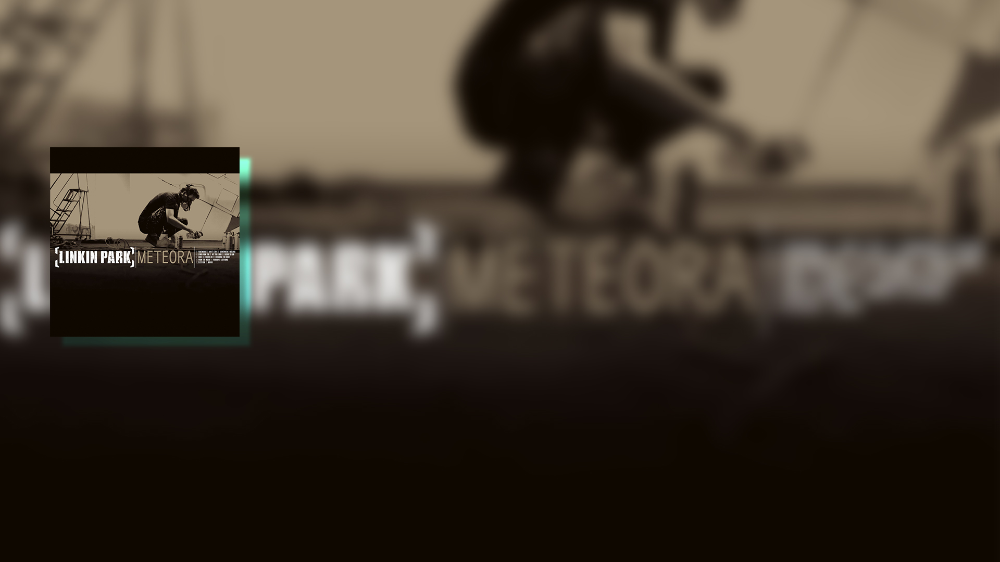

1991 When Bennington was 15, he first began singing with a band called Sean Dowdell and released an eponymous three-track cassette.
(Chester: The second from the left.)
1992 Shortly after the split of the first band, the previous member Sean and he formed a new band called "Grey Daze" which recorded two albums, "No Sun Today" and "Wake Me" until later breaking-up.

1999 Was frustrated and almost ready to quit his musical career altogether when he received an audition with the future members of Linkin Park. Bennington quit his day job at a digital services firm and took his family to California, where he had a successful audition with Linkin Park, who were then called "Xero". "Xero" is also the name titled for a demo tape recorded back then.
(Chester: The first right.)

1999 First gained prominence as a vocalist following the release of Linkin Park's debut album, Hybrid Theory which became a commercial success and was certified Diamond by the Recording Industry Association of America in 2005, making it the best-selling debut album of the decade, as well as one of the few albums ever to hit that many sales.


2003 Gave the vocals for the Linkin Park album, "Meteora", including the hit song "Numb". The album earned instant worldwide recognition and catapulted to the No. 1 position in the U.S. and UK chart and No. 2 in Australia immediately after release.

Has released the debut album, "Out of Ashes" of his own band, Dead by Sunrise, as a side project.
2005
(Chester: The mid.)

2007 His third album Minutes to Midnight was released. With over 600,000 copies in its first week and gaining the top spot on the Billboard Charts, it became one of the most successful albums and showed a style shift of Linkin Park from metal to a more straightforward rock approach.
The song What I’ve Done became one of the most played tracks in that summer and a soundtrack hit for the year’s huge Transformers movie.


2006/2009 Appeared in cameo roles of a pharmacy customer in the American action film, Crank, and a horse-track spectator in the sequel Crank: High Voltage, co-starred with British actor Jason Statham.
Watch Trailer

2010 Gave the vocals for the Linkin Park’s fourth album, A Thousand Suns, which was a multi-concept album that highlighted the concept of nuclear warfare. The lead member Shinoda stated the album also references numerous social issues and blends human ideas with technology.
Upon release, the album polarized critics and fans, while it has been a commercial success, debuting at number one on over ten charts and was certified gold by the RIAA in February 2011.
By June 2014, it had sold over 906,000 copies in the United States and 5 million copies worldwide.
The hit Iridescent serves as the theme song for the film Transformers: Dark of the Moon, continuing the streak of Linkin Park's songs played as the theme songs of the Transformers films.

1999 First gained prominence as a vocalist following the release of Linkin Park's debut album, Hybrid Theory which became a commercial success and was certified Diamond by the Recording Industry Association of America in 2005, making it the best-selling debut album of the decade, as well as one of the few albums ever to hit that many sales. .
1991 When Bennington was 15, he first began singing with a band called Sean Dowdell and released an eponymous three-track cassette.
(Chester: The second from the left.)
1992 Shortly after the split of the first band, the previous member Sean and he formed a new band called "Grey Daze" which recorded two albums, "No Sun Today" and "Wake Me" until later breaking-up.

1999 Was frustrated and almost ready to quit his musical career altogether when he received an audition with the future members of Linkin Park. Bennington quit his day job at a digital services firm and took his family to California, where he had a successful audition with Linkin Park, who were then called "Xero". "Xero" is also the name titled for a demo tape recorded back then.
(Chester: The first right.)